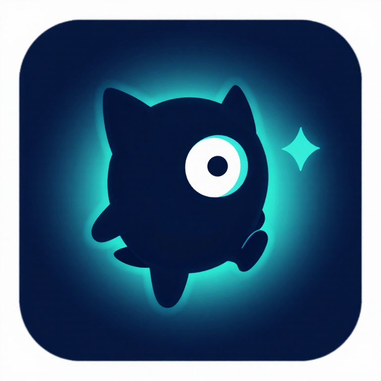

reflex
Control your Mac from Claude Code without spending a token. Type "turn the volume down" or "open Figma" and your Mac does it at once; a tiny local model understands free phrasing, and anything that is not wholly an action goes to Claude as typed.
Why
Acting on your own machine should not cost a model turn. Asking Claude to open a folder means a turn, tokens and a wait for something your Mac can do by itself. reflex recognises those phrases while you type, shows what Enter will do, and does it locally: the prompt never reaches the model, so it costs no tokens and no turn.
While you type
A line above the prompt says what Enter will do on your Mac.
⚡ volume down > turn the volume down
Press Enter and it runs here, with one line in the transcript, and Claude never sees it. Nothing shows for phrases that are not actions. It takes a phrase only when the whole phrase is an action: open brand and fix the bug goes to Claude, and a leading \ always sends the phrase to Claude as typed.
What it can do
open brand · open Downloads | Opens a folder: your repos under ~/Development, your home folders, zoxide's. |
open Figma · open mail | Opens an app by its name, or by what it does: mail, browser, calendar, music, notes, maps, photos, contacts, messages, the VPN. |
open it · open that doc | Opens the file Claude just wrote in this session. |
show me the watchmen post · find the invoice | Shows a file in Finder, found by the words of its path; or the newest of a kind: open the latest pdf in downloads. |
open the README in the editor · terminal in reflex | Opens a file in your editor, at a line if you say one; a terminal in a folder; a repo on GitHub. |
open linkedin | Opens a page: an address, or an alias you set. |
copy "hello" · copy the path of brand | Copies an image, a file, text or a path to the clipboard. |
run focus mode | Runs a Shortcut from the Shortcuts app, by its exact name. |
turn the volume down · lock the screen · turn on dark mode | Volume, mute, lock, dark mode, sleep the displays, screen saver, hide other apps, screenshot, Mission Control, Settings panes, quit or hide an app. |
how much battery do I have? · disk space | Answers battery, disk and VPN status in one line, without Claude. |
empty the trash | Empties the Trash, after asking, with No as the default. |
English and Spanish. A short, closed catalogue of verbs, run as fixed argument lists, never through a shell. State changes need a verb: a bare "dark mode" answering Claude's question stays with Claude. The only action that deletes anything, emptying the Trash, asks first.
Templates, then a small model, then Claude
reflex is Karpathy's cognitive core at the scale of one machine: a small model that knows your system rather than the world, acts on it locally, and asks a big model, the oracle, when it is not sure.
| Templates | Phrase patterns in Spanish and English, matched against the whole phrase. Free and instant. |
| Small model | reflex-core: FunctionGemma 270M taught the task on invented Macs, served by Ollama on yours. It finds what you mean in free phrasing ("could you pull up brand for me?"). It proposes; reflex decides: the verb, the place and whether it is a request come from the phrase, and the target must exist in your Mac's own index. |
| Claude | Anything that is not wholly an action, and anything reflex is not sure of, goes to Claude as typed. |
Claude is also the teacher. It wrote the training phrases for three invented people's Macs; a small adapter learned from them on a Mac in minutes, and a version is kept only if it scores better on the exam with no wrong action. Because it learned the task and not anyone's names, the same model works on your Mac as it is. reflex learn keeps what it missed, for the next version.
The numbers
Precision first: passing a phrase to Claude is fine, acting wrongly is not. On a held-out exam of phrases with the expected action, including traps that must go to Claude:
| Templates, at the start | 64 of 153 right, 0 wrong |
| Base FunctionGemma | no phrase gained |
| Better pipeline, no model | 81 of 224 right, 0 wrong |
| Trained model alone, v1 → v4 | 44 → 88 of 127 reachable requests, but 11 → 19 wrong |
| v4, with reflex deciding what the phrase states | 99 of 127 right, 0 wrong |
| v4 packaged in Ollama | 97 of 127 right, 0 wrong, p95 about 155 ms |
| Public model, never saw this Mac | 106 of 127 right, 0 wrong |
| On an invented person's Mac | 180 of 200 requests right, 0 wrong |
Most of the gains came from what surrounds the model: templates, grounding every target in what really exists, and an allow-list of request words.
Install
/plugin install reflex --marketplace pelayomendez/reflex
Needs macOS and Node.js 20 or newer. It works with templates alone; zoxide adds the folders you visit most.
Optional: the small model
For freer phrasing, pull reflex-core with Ollama and point reflex at it in ~/.config/reflex/config.toml:
ollama pull mfpelayo/reflex-core
[model] url = "http://localhost:11434/v1" name = "mfpelayo/reflex-core"
Without it, templates still do the fixed phrasings. Commands, aliases, reflex teach and the design in the README.